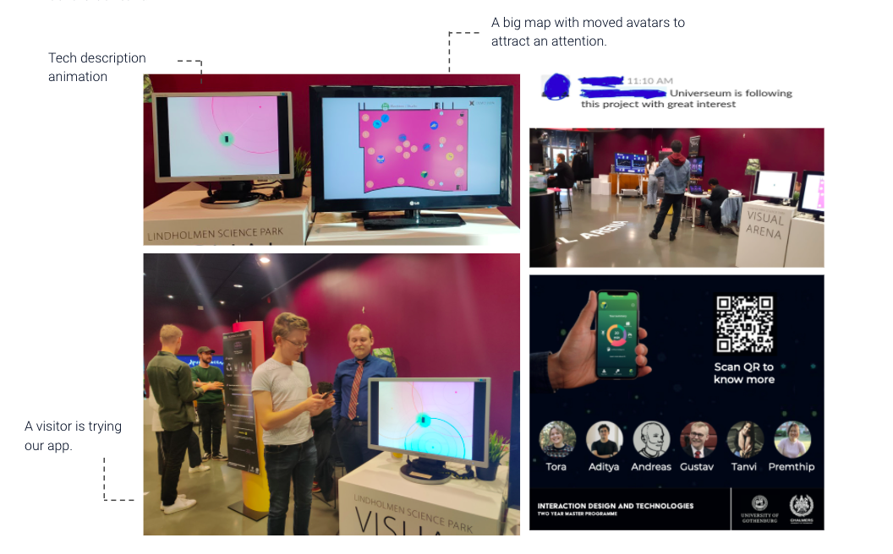

During the latest years, several reports have raised concerns about the fact that children in Sweden are losing interest in Science-Technology-Engineering-Mathematics (STEM) subjects as they become older. Research suggests that Science Centers can help increase the amount of people picking STEM-related subjects for their higher education.
We applied the User Experience Design process to create a tool to spark a teenager’s interest in STEM based on their interest and the knowledge of our chosen topic. Letting user research be our guide, we brainstormed and designed multiple artifacts. We then tested our ideas via showing our storyboard and interview our experts and developed a high-fidelity interactive prototype based on our findings.
User research is my main responsibility. Knowing teenager experience in the Science Center and their characteristic will help us to create a better solution. However, we cannot conduct our research with our target group under a restriction.
Futhermore, our main target users are from different type of user which we needed to find the connection. By mapping out the relationship, we discovered various of stakeholders who indirectly connect our main target together.
Hence, researching on academic papers and interviewing experts with our questions will light our understanding like: What is the teenager behavior toward the digital product? What do they do during their visit to the science center? These are some of our high level findings:
After researching on a school curriculum and teens, we brainstormed our initial ideas which combined with a science topic, everyday life technology and a Quantified self. Then we clustered it with an Affinity diagram and voted for an interesting idea. We decided to proceed with a concept that would teach teenagers about tracking technology.
As we finally voted to teach a teen about tracking technology as our final idea, we brainstormed how our artifact would be like in more detail, which components we are needed and how we would introduce this new experience to users. After that we translated our idea to user flows and golden path. Then we created HMW to find the solution of pain points we found.
During the ideation, we concluded that a visitors’ attention is the key to our success. Our exhibit needed to be noticed. Thus, conducting a research in ideation stage is an important step to find a key for our project. In this case, I started to research about how to design a physical installation.
In the next step, I translated our design idea, together with researched data into a wireframe and a sketch of installation. It was tested by explaining it within our team before moving on to a storyboard.
Later on, I sketched our initial storyboard by combining all the wireframe and the user flow. This is the storyboard about the teeanger visiting the science center, curious about the technology and try the application at the exhibit.
Later on the storyboard was iterated by the result of evaluation, and polish to an animation. I combined a drawing, UI mockup and the real set up at Universeum, aiming for stakeholders to foresee a possible future of this project. We used this animation as one of our evaluation tools.
To test our design,, the guides were shown the initial storyboard sketch and got an introduction to the idea. The teenagers were showed a well craft animation and walked through with a mockup. Some of our main takeaways feedback in this project are presented below.
The exhibit was hosted physically at Visual Arena, Chalmers Lindholmen. Our stakeholder, Universeum has a great interesting in our project. Our audiences were amazed with our solution due to our project is a framework that rely on others content.
Lastly, we experienced many unexpected event and obstacle through out the end of project. We have learnt valuable lessons from this project and these are what I learnt and reflected.
As we provide the visitor tracking data to Universeum, we concerned about the personal data which the consequence can be sensitive.
Interviewing an expert( a guide) who works closely with teenagers is the best decision we made in the first round of user research because they knew how teenagers are when they are inside the science center and why they are there. THEY ARE A TEEN EXPERT.
We had difficulty conducting real-life testing with teenagers from the target group. More time should be spent on adapting the framework to specifically fit the target group.
We didn’t do user research in the first round of ideation which made our design shifted away from our main target. However, we came back on the right track after I mentioned about this issue before the second ideation.
Accessibility is one thing that I wanted to improve for this project. There are many possibilities for this area such as adding a guiding voice for blinded people or language translators.
We concerned the comprehensibility of the animation, map design and color choices in the application